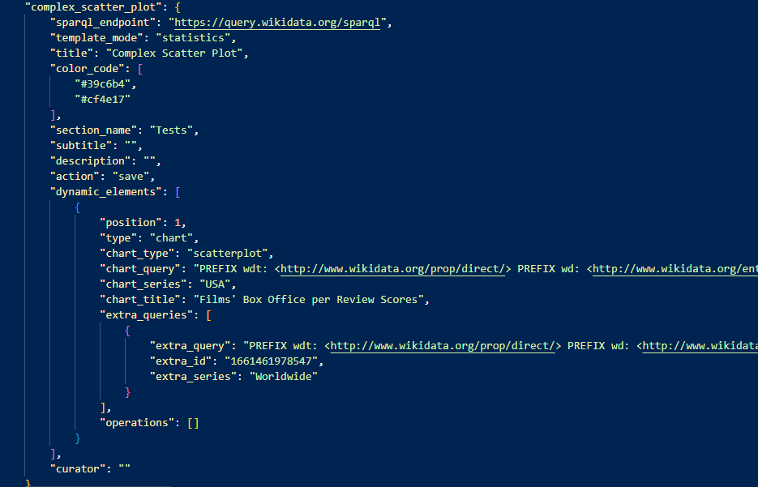

Documentation
MELODY is a web-based, extensible, reusable, and user-friendly software for
retrieving, presenting, and publishing Linked Data in the form of Data Stories.
SEE METHODS
The Flask
Application
MELODY is developed with the Flask framework and serves three main functions:
- manages incoming and outgoing data from the configuration file using methods;
- provides a user authentication system;
- provides a web interface similar to a CMS rendered via routing.
Configuration Methods
You can check in detail each method in the dedicated data_methods.py
module.
Authentication System
You can check in detail each method in the dedicated github_sync.py
module.
Routing
Main routing functions are:
- .route("/index.html"): returns the homepage.
- .route("/setup", methods=['POST', 'GET']): if the HTTP method is GET, it
renders the setup.html page, where the user can enter preliminary information
about a data story; if the HTTP method is POST, the information submitted
through the small form is received, managed, and stored in the config.json file.
With the same information, the user is redirected to the selected template
WYSIWYG form.
- .route("/send_data/<string:section_name>", methods=['POST', 'GET']):
this
function manages the submission of the WYSIWYG form, i.e. the data is received
thanks to the manage_datastory_data method, processed and stored in the
config.json file. With the same data, the user is redirected to the final
product, the page with the data story.
- .route("/<string:section_name>/<string:datastory_name>"): thanks to
the dynamic routing and the variables specified in the URL, the data story
template is rendered and filled with the correct data. This routing function
works for any available data story.
- .route("/modify/<string:section_name>/<string:datastory_name>",
methods=['POST', 'GET']): if the HTTP method is GET, the server renders
the modifiable version of the data story, the WYSIWYG form; if the HTTP method
is POST, the server again manages the submission of the WYSIWYG form and
redirects to the data story page.
The
Configuration File
The config.json file can be created almost from scratch. Ideally, when a new
user downloads
and runs the software for the first time, this file is filled with the most important
default information. Anything regarding data stories that can be created is filled in via
the setup passages provided by the web interface itself. On the server side, the
configuration methods shown above are responsible for receiving, processing, and storing the
data.
The config.json file contains information about:
- Types of available templates and their basic properties.
- Types of charts.
- Types of operations.
- List of data stories, organized as “section:datastory_list”.

A snippet from the configuration file representing data about a story.
In detail:
- “sections” are the macro areas in which data stories can be organized. They are stored
as a list of strings, and are updated every time a new one is created.
- “operations” are the type of actions that can be performed on data after retrieval from
the SPARQL endpoint. They are stored as a fixed list of strings.
- “templates” stores the information about the provided template types. It is structured
as a dictionary that has as keys the name of each template, and as value a dictionary
with detailed information.
- “chart_types” are the types of charts available to be visualized. They are stored as a
fixed list of strings.
- “data_sources” contains the information about all the data stories created. It is
structured as a dictionary in which keys are the name of the sections, the value is a
dictionary that contains all the data story under a section. It is automatically updated
during the setup phase. Each data story has as value a dictionary that contains its
information, further organized.
- “dynamic_elements” is a list of dictionaries. Each dictionary is a dynamic segment that
composes the final datastory, namely text, counts and charts. This is information that
the user can add during the setup phase in the WYSIWYG form.